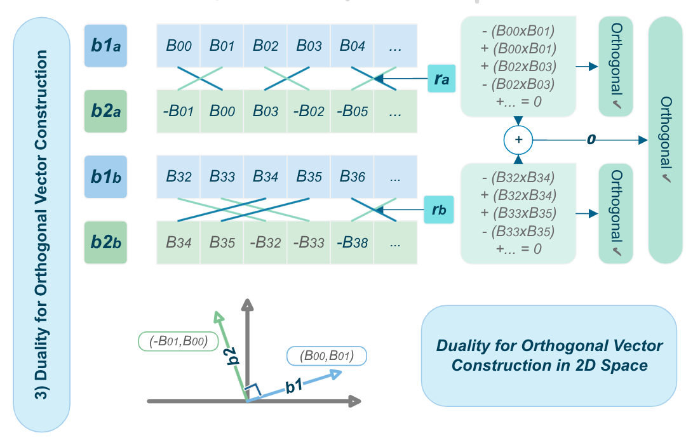
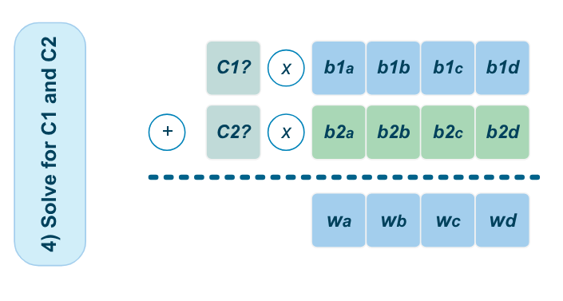
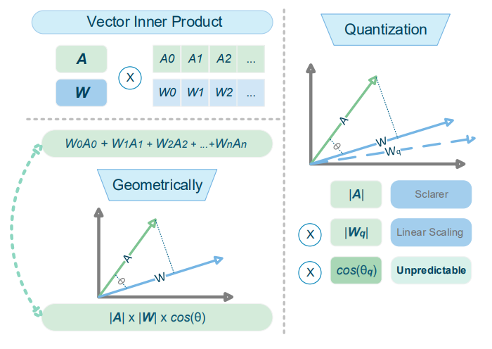

OrpQuant introduces a geometric perspective to PoT quantization, addressing angular degradation with a multiplier-free, analytically solvable dual-basis projection that achieves competitive accuracy and dramatic hardware timing improvements.
本文从几何角度揭示了幂次量化在亚4位宽度下的根本缺陷——低角分辨率机制，并提出了一种无乘法器、可解析求解的双基投影方法ORP。该方法在LLaMA-2-7B上以W3/A16配置达到6.10的困惑度，且校准时间仅需约15分钟，同时通过28nm RTL综合验证了0.35ns关键路径延迟和3.33 TOPS/W的能效。
Deep Note — orpquant
Key Takeaways - Identifies the 'Low Angular Resolution Regime' as a fundamental geometric flaw in power-of-two (PoT) quantization at sub-4-bit widths. - Proposes Orthogonal Residual Projection (ORP), a dual-basis geometric projection that uses shift-and-add operations to synthesize a higher-resolution residual lattice. - Achieves competitive perplexity (6.10 on LLaMA-2-7B at W3/A16) without MAC operations, using an analytical solver that reduces calibration time to ~15 minutes. - Demonstrates hardware efficiency via 28nm RTL synthesis: 0.35 ns critical path delay, 2.85 GHz theoretical clock, and 3.33 TOPS/W at 1.8 GHz.
0) Metadata
- Title: OrpQuant: Geometric Orthogonal Residual Projection for Multiplier-Free Power-of-Two Transformer Quantization
- Alias: orpquant
- Authors: Maoyang Xiang, Bo Wang, Tao Luo
- arXiv ID: 2605.26092
- Published:
- Links:
- Abs: https://arxiv.org/abs/2605.26092
- HTML: https://arxiv.org/html/2605.26092v1
- PDF: https://arxiv.org/pdf/2605.26092
- Tags: power-of-two-quantization, multiplier-free, edge-deployment, geometric-projection, llm-compression
- Domains: system_safety
- Rating: 4/5 (base 1 + quality 2 + observation 1)
1) Why-read
OrpQuant introduces a geometric perspective to PoT quantization, addressing angular degradation with a multiplier-free, analytically solvable dual-basis projection that achieves competitive accuracy and dramatic hardware timing improvements.
2) CRGP
C — Context
Deploying LLMs and ViTs on edge devices is limited by memory and the timing bottlenecks of dense MAC arrays. Power-of-Two (PoT) quantization offers a hardware-efficient alternative by replacing multiplications with bit-shifts, but suffers from precision loss at ultra-low bit-widths. Prior work often attributes this loss to scalar distribution mismatch, overlooking the high-dimensional geometric degradation of feature manifolds.
R — Related work
- Post-Training Quantization (PTQ) methods like BRECQ, QDrop, AIQViT use block-wise error reconstruction with gradient-based optimization.
- LLM quantization methods (e.g., AWQ, SpinQuant) use second-order Hessian information or activation-aware scaling to minimize reconstruction loss.
- High-dimensional rotational quantization explores trade-offs between angular resolution and computational overhead.
- Multiplier-free architectures using scalar logarithmic quantization face representational limitations due to non-uniform angular resolution.
G — Gap
Existing PoT quantization methods overlook the geometric degradation of high-dimensional feature manifolds caused by the non-uniform angular resolution of the exponential lattice. This 'Low Angular Resolution Regime' becomes severe at sub-4-bit thresholds, leading to unpredictable angular deviations that compromise semantic integrity, yet prior work lacks a principled geometric correction that is both hardware-efficient and analytically solvable.
P — Proposal
OrpQuant introduces Orthogonal Residual Projection (ORP), a dual-basis geometric projection that formulates quantization as a projection onto a 2-D orthogonal subspace. By capturing the orthogonal residual lost in 1-D PoT mapping, ORP synthesizes a higher-resolution lattice using only shift-and-add operations, and provides an analytical O(N) solver that avoids gradient-based optimization, enabling fast calibration.
---
4) Experiments
Main results
Under W3/A16 constraint, ORP achieves perplexity of 6.10 on LLaMA-2-7B, competitive with MAC-intensive AWQ. On LLaMA-2-13B at W4/A16, perplexity is 5.09. On ViT-Base at W4/A4, Top-1 accuracy is 79.54%. Full-model calibration for LLaMA-2-7B takes ~15.1 minutes. 28nm RTL synthesis shows critical path delay of 0.35 ns, theoretical 2.85 GHz clock, and 3.33 TOPS/W at 1.8 GHz.
Ablation
The dual-basis orthogonal residual projection is critical: without the secondary orthogonal basis, angular degradation increases significantly, leading to higher perplexity at sub-4-bit widths. The analytical solver reduces calibration time from hours (e.g., AWQ, SpinQuant) to ~15 minutes without sacrificing accuracy.
Limitations
The method is evaluated primarily on LLaMA-2 and ViT-Base; generalization to other architectures (e.g., Mixture-of-Experts, smaller models) is not extensively validated. The hardware analysis is based on RTL synthesis at 28nm, not actual silicon tape-out, so real-world power and area numbers may vary. The orthogonal residual projection adds a second basis, increasing memory footprint slightly compared to pure 1-D PoT quantization.
5) Why it matters
- Provides a principled geometric understanding of quantization degradation, which can inform better quantization-aware training or fine-tuning strategies.
- Demonstrates that multiplier-free architectures can achieve competitive accuracy, opening the door to ultra-low-power edge deployment of LLMs and ViTs.
- The analytical solver significantly reduces calibration overhead, making on-site adaptation practical for resource-constrained edge devices.
- The hardware co-design perspective (RTL synthesis) bridges the gap between algorithmic innovation and real silicon constraints, a crucial step for deployment.
6) Next steps
- [ ] Evaluate ORP on more diverse model families (e.g., GPT-Neo, Mistral, Mixtral) and tasks (e.g., reasoning, code generation) to assess generality.
- [ ] Extend the dual-basis projection to activations (A4 or lower) and explore joint weight-activation quantization under the same geometric framework.
- [ ] Implement ORP on an FPGA or test chip to validate the 2.85 GHz timing and 3.33 TOPS/W efficiency in silicon.
- [ ] Investigate combining ORP with other compression techniques (e.g., pruning, distillation) for further edge deployment gains.
7) Scoring
4/5 = base 1 + quality 2 + observation 1
OrpQuant：面向无乘法器幂次变换器量化的几何正交残差投影
主要结论 - 识别出幂次量化在亚4位宽度下的'低角分辨率机制'，这是高维特征流形几何退化的根本原因。 - 提出正交残差投影（ORP），通过移位加操作合成高分辨率残差格点，无需乘法器。 - 在LLaMA-2-7B W3/A16上达到6.10困惑度，与MAC密集型AWQ相当，校准时间仅约15分钟。 - 28nm RTL综合显示0.35ns关键路径延迟、2.85GHz理论时钟频率和3.33 TOPS/W能效。
1) 阅读理由
OrpQuant通过几何视角解决幂次量化的角分辨率退化问题，提出一种无乘法器、可解析求解的双基投影方法，在保持竞争力的同时大幅提升硬件时序效率。
2) CRGP（背景 / 相关工作 / 差距 / 方案）
背景：在边缘设备部署LLM和ViT受限于内存和密集MAC阵列的时序瓶颈。幂次量化通过移位代替乘法提供硬件高效方案，但在超低位宽下精度损失严重。先前工作常将此归因于标量分布不匹配，忽略了高维特征流形的几何退化。 相关工作：后训练量化方法如BRECQ、QDrop、AIQViT使用基于梯度的块级误差重建；LLM量化方法如AWQ、SpinQuant利用二阶海森信息或激活感知缩放；高维旋转量化探索角分辨率与计算开销的权衡；无乘法器架构使用标量对数量化，但因非均匀角分辨率存在表示限制。 差距：现有幂次量化方法忽略了指数格点非均匀角分辨率导致的高维特征流形几何退化。这种'低角分辨率机制'在亚4位阈值下变得严重，导致不可预测的角度偏差损害语义完整性，但先前工作缺乏既硬件高效又可解析求解的几何校正。 提案：OrpQuant引入正交残差投影（ORP），一种双基几何投影，将量化表述为到二维正交子空间的投影。通过捕获一维幂次映射中丢失的正交残差，ORP仅用移位加操作合成高分辨率格点，并提供解析O(N)求解器避免梯度优化，实现快速校准。
3) 实验
在W3/A16约束下，ORP在LLaMA-2-7B上达到6.10困惑度，与MAC密集型AWQ相当。在LLaMA-2-13B W4/A16上困惑度为5.09。在ViT-Base W4/A4上Top-1准确率为79.54%。LLaMA-2-7B全模型校准约需15.1分钟。28nm RTL综合显示关键路径延迟0.35ns，理论时钟2.85GHz，1.8GHz下能效3.33 TOPS/W。
消融实验
双基正交残差投影至关重要：缺少第二正交基时，角退化显著增加，导致亚4位宽度下困惑度升高。解析求解器将校准时间从数小时（如AWQ、SpinQuant）降至约15分钟，且不牺牲精度。
局限性
该方法主要在LLaMA-2和ViT-Base上评估，未广泛验证对其他架构（如混合专家模型、小模型）的泛化性。硬件分析基于28nm RTL综合，而非实际硅片流片，实际功耗和面积可能不同。正交残差投影增加第二基，相比纯一维幂次量化略微增加内存占用。
4) 重要性
- 提供了量化退化的几何理解，可指导更好的量化感知训练或微调策略。
- 证明无乘法器架构可达到有竞争力精度，为LLM和ViT的超低功耗边缘部署开辟道路。
- 解析求解器显著降低校准开销，使资源受限边缘设备的现场自适应成为可能。
- 硬件协同设计视角（RTL综合）连接算法创新与真实硅片约束，是部署的关键一步。
5) 下一步
- [ ] 在更多样化的模型家族（如GPT-Neo、Mistral、Mixtral）和任务（如推理、代码生成）上评估ORP，检验泛化性。
- [ ] 将双基投影扩展到激活值（A4或更低），探索同一几何框架下的联合权重-激活量化。
- [ ] 在FPGA或测试芯片上实现ORP，验证2.85GHz时序和3.33 TOPS/W能效的实际硅片表现。
- [ ] 研究ORP与其他压缩技术（如剪枝、蒸馏）的结合，进一步提升边缘部署收益。


